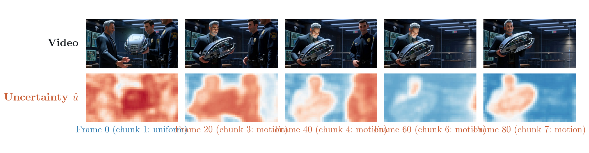
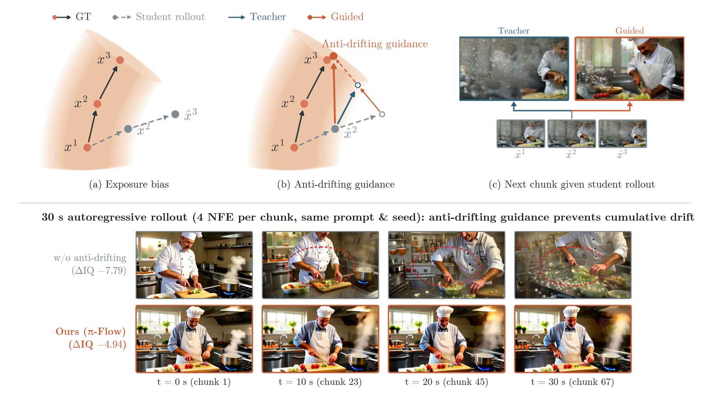
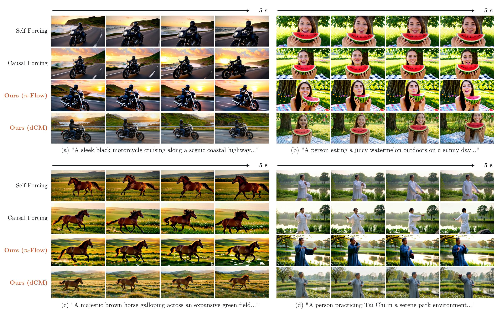
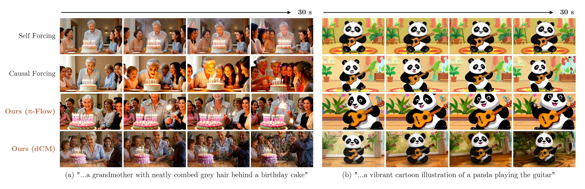
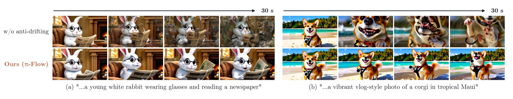
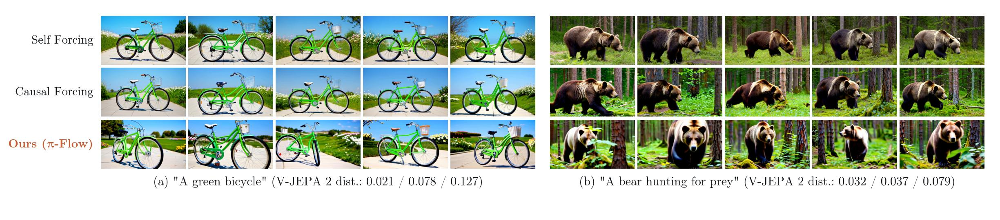

Abstract
Distilling autoregressive (AR) video diffusion models into few-step generators typically proceeds in two stages: teacher forcing on clean histories, followed by self-forcing on student rollouts. While FlowMap distillation methods—such as consistency models and π-Flow—can in principle train both stages directly from the AR teacher, existing approaches still fall short of Distribution Matching Distillation (DMD) in visual quality and rely on DMD for self-forcing at the expense of sample diversity. We trace this gap to a failure mode of teacher guidance in each stage. First, during teacher forcing, conditioning on the clean history resolves the static background, concentrating uncertainty in moving regions where standard Classifier-Free Guidance (CFG) fails to reduce the curvature of the teacher's velocity field. Second, during self-forcing, the causal teacher is trained only on clean histories; when conditioned on a drifted student rollout, it continues the trajectory rather than pulling it back toward the clean manifold. We address both failure modes by modifying only the teacher guidance. For teacher forcing, we introduce motion-aware skip-layer guidance, which predicts patch-wise flow-matching uncertainty from intermediate teacher features and selectively guides high-uncertainty moving regions. For self-forcing, we introduce anti-drifting guidance, which pairs the frozen teacher with an online drift model updated on student rollouts to steer trajectories back toward the clean manifold. Across chunk-wise and frame-wise causal teachers on Wan2.1-1.3B, applying our two guidance methods to π-Flow and dCM raises VBench by up to +3.15 points over CFG, matching DMD-based baselines in 4 NFE while substantially improving multi-seed diversity and 30-second rollout stability.
Why does FlowMap distillation fall short on autoregressive video models?
Autoregressive (AR) video diffusion models generate video chunk by chunk, conditioning each new chunk on previously generated frames cached in the key–value (KV) cache. Distilling a 64-NFE causal teacher into a 4-step student typically follows a two-stage paradigm: Stage 1 (Teacher forcing) trains the student on clean ground-truth histories, and Stage 2 (Self-forcing) trains the student on its own autoregressive rollouts.
In principle, trajectory-level FlowMap distillation (such as π-Flow and dCM) can supervise both stages directly from the causal AR teacher without training a separate bidirectional critic. In practice, however, naive FlowMap distillation produces blurry fast motion after Stage 1 and suffers from severe color and structural drift during Stage 2—forcing prior work to fall back on mode-seeking Distribution Matching Distillation (DMD). We trace both issues to a fundamental limitation of how the causal teacher is guided in each stage.
1Stage 1: Teacher forcing
Clean video history x0<i is cached in the KV cache. Given a noisy chunk xsi, the 4-step FlowMap student predicts x̂ti and matches the guided teacher v*.
2Stage 2: Self-forcing
During inference there is no real history. Stage 2 conditions the student on its own rollout x̂0<i, appending each generated chunk back into the KV cache.
3Why CFG stops working after the first chunk
In chunk 1 (from scratch), CFG smooths the teacher's velocity field (+7.7% in 1/Cv). In later chunks (i > 1), history fixes the static background, concentrating uncertainty in moving regions where text CFG fails.
4Stage 1 failure: motion blurs in 4-step distillation
Because moving regions retain high velocity curvature under CFG, 4-step student jumps accumulate truncation error—leaving the static gym background sharp while fast limb motion blurs.
5Stage 2 failure: the causal teacher continues drift
The causal teacher vϕ was trained only on clean histories. When conditioned on a drifted rollout x̂0<i, it continues parallel to the ground-truth manifold rather than repairing the offset.
Use the left/right arrows (or keyboard arrow keys) to step through each beat, or click the progress bar to scrub.
1. In Stage 1, history resolves the static scene, leaving high curvature in moving regions
For a 4-step FlowMap student to match the teacher accurately, the teacher's ODE trajectory must have low curvature. We quantify how smoothly the guided teacher's velocity field varies along its trajectory via the inverse normalized velocity sensitivity 1/Cv. On the first chunk (generated from scratch without history), standard Classifier-Free Guidance (CFG) reduces posterior uncertainty globally and increases velocity smoothness 1/Cv by +7.7%.
On subsequent chunks (i > 1), however, the clean history hi = x0<i already determines the static scene—a single Euler step of the teacher renders the background sharp while leaving the moving subject blurry. Because the history already satisfies the text prompt on the static scene, amplifying text conditioning via CFG provides no additional constraint on how moving objects evolve from frame to frame, and actually degrades velocity smoothness.


Left (Fig. 3): Given clean history x1, a single teacher step already resolves the static golf course background, concentrating posterior uncertainty on the moving player (orange dashed box). Right (Fig. 4a): CFG improves velocity smoothness 1/Cv on the first chunk (+7.7%) but degrades it on the second chunk once history is present.
Method: Modifying Only the Teacher Guidance
Rather than introducing a separate bidirectional score network or adversarial DMD loss, we fix both stages of autoregressive FlowMap distillation by modifying only the teacher velocity v* used to supervise the student:
- Stage 1 — Motion-Aware Skip-Layer Guidance: A lightweight uncertainty head on frozen teacher features predicts per-patch flow-matching residual variance ûp and selectively applies skip-layer guidance (SLG) to high-uncertainty moving regions.
- Stage 2 — Anti-Drifting Guidance: An online drift model vψ is updated with stop-gradient on the student's rollouts to estimate the drifted velocity, and subtracting vψ from the frozen teacher vϕ yields an inward restoring velocity (vϕ − vψ) that pulls rollouts back toward the clean manifold.
1Stage 1: Predict patch-wise motion uncertainty
A lightweight head on frozen teacher features (// sg) is trained with a Gaussian NLL loss for 500 steps to predict per-patch residual variance ûp, which automatically highlights moving regions in chunks i > 1.
2Stage 1: Motion-aware skip-layer guidance
Weighting the negative branch's block skip by normalized uncertainty up concentrates guidance on moving patches (+16.4% local smoothness on top motion decile D10), resolving fast limb motion in 4 steps.
3Stage 2: Track student drift with an online drift model
During self-forcing, an online drift model vψ is trained with flow matching (// sg, n = 5 steps per student step) on student-generated chunks x̂0i conditioned on drifted history x̂0<i.
4Stage 2: Anti-drifting guidance pulls rollouts back to the manifold
Combining the teacher with the inward correction (vϕ − vψ) repairs color and structural drift on each chunk, keeping 30-second rollouts sharp and stable.
Step-by-step overview of our two teacher guidance mechanisms. At inference, the distilled 4-NFE student runs by itself with zero guidance overhead.
Stage 1: Motion-Aware Skip-Layer Guidance
Skip-Layer Guidance (SLG) perturbs the negative guidance branch by skipping a transformer block, which relies on spatiotemporal context rather than text conditioning alone. However, applying SLG uniformly across all patches perturbs already-certain static background regions and saturates early. Instead, we attach a lightweight uncertainty head to intermediate features of block ℓ = 10 of the frozen positive-prompt teacher and train it for 500 updates to predict the log variance of the teacher's flow-matching residual.
As shown below, the predicted uncertainty ûp is nearly uniform on the first chunk (where the entire scene is synthesized from scratch), and automatically concentrates on moving regions in subsequent chunks. Using normalized uncertainty up ∈ [0, 1] as a soft gate on the skipped block increases local velocity smoothness 1/Cvlocal monotonically across uncertainty deciles—reaching +16.4% over CFG on the highest-uncertainty moving patches (D10).

Predicted patch-wise uncertainty ûp across chunks (Fig. 6): On Frame 0 (chunk 1, from scratch), uncertainty is high across the whole frame. On Frames 20–80 (chunks i > 1, conditioned on history), uncertainty concentrates specifically on the moving subject and hands while dropping on the static background.


Left (Fig. 5): Motion-aware skip-layer guidance predicts patch-wise uncertainty u from block ℓ of the positive branch and uses u as a soft skip weight in the negative branch. Right (Fig. 4b): Local smoothness gain 1/Cvlocal over CFG across uncertainty deciles D1–D10, reaching +16.4% on the highest-motion decile D10.
Stage 2: Anti-Drifting Guidance
During self-forcing (Stage 2), the student rolls out its own history ĥi = x̂0<i. Because the causal teacher vϕ was trained exclusively on clean ground-truth histories, conditioning vϕ on a drifted history ĥi produces a trajectory that continues parallel to the ground-truth manifold without removing the accumulated offset.
To construct a corrective direction using only causal models, we maintain an online drift model vψ initialized from the teacher and updated with standard flow matching (n = 5 updates per student update) on the student's generated chunks x̂0i conditioned on the student's rollout history ĥi. Because vϕ continues parallel to the clean manifold while vψ points along the student's further drift, their difference vϕ − vψ points inward toward the clean manifold:

Top (Fig. 7): (a) Under standard self-forcing, the causal teacher vϕ continues parallel to the ground-truth manifold from a drifted history x̂<i. (b) Subtracting the online drift model vψ creates an inward correction (vϕ − vψ) that steers the guided trajectory back toward the clean manifold. (c) On a single next chunk given a drifted chef rollout, the unguided teacher retains the washed-out tint whereas the anti-drifting guided teacher restores natural contrast. Bottom: Over a 30 s rollout (67 chunks), anti-drifting guidance prevents cumulative color and structural degradation.
5-Second Video Generation Results
We apply our two teacher guidance mechanisms to two representative FlowMap distillation methods—π-Flow and dCM—across both chunk-wise and frame-wise causal teachers on Wan2.1-1.3B (from Causal Forcing and Causal-rCM). All students generate each chunk in 4 NFE without any guidance at inference.

Qualitative comparison of 4-NFE chunk-wise students (Fig. 8): Frames at 0, 1.7, 3.4, and 5 s from Self Forcing, Causal Forcing, Ours (π-Flow), and Ours (dCM) with the Causal Forcing teacher for the same seed. Click the figure to expand.
Both guidance mechanisms contribute +3.15 VBench over standard CFG
Starting from a naive CFG-only π-Flow student (81.61 VBench), adding motion-aware skip-layer guidance raises VBench to 84.35 (+2.74 points), and combining it with anti-drifting guidance in Stage 2 reaches 84.76 (+3.15 points)—surpassing both the 64-NFE causal teacher (84.46) and DMD-based Causal Forcing (84.74) without any DMD stage:
5-second VBench Total score (five-seed mean across 946 extended prompts) for 4-NFE chunk-wise students vs. their 64-NFE causal AR teachers. Click “Replay” to replay the animation.
| Setting | Init / Teacher Family | Method | Distillation | Teacher | NFE | VBench Total ↑ | Quality ↑ | Semantic ↑ | Dynamic ↑ | V-JEPA 2 Cos ↑ | VideoMAE V2 Cos ↑ |
|---|---|---|---|---|---|---|---|---|---|---|---|
| Chunk-wise | Self Forcing | Self Forcing† | DMD | 14B | 4 | 84.22 | 84.83 | 81.81 | 66.1 | 0.0555 | 0.0117 |
| Chunk-wise | Causal Forcing | AR teacher, CFG | — | — | 32×2 | 84.46 | 85.11 | 81.86 | 77.8 | 0.0882 | 0.0236 |
| Chunk-wise | Causal Forcing | Causal Forcing† | DMD | 14B | 4 | 84.74 | 85.41 | 82.02 | 83.9 | 0.0745 | 0.0198 |
| Chunk-wise | Causal Forcing | Ours (π-Flow) | FlowMap | 1.3BAR | 4 | 84.76 | 85.83 | 80.46 | 88.3 | 0.0964 | 0.0281 |
| Chunk-wise | Causal Forcing | Ours (dCM) | FlowMap | 1.3BAR | 4 | 83.70 | 84.55 | 80.32 | 69.7 | 0.0875 | 0.0241 |
| Chunk-wise | Causal-rCM | AR teacher, CFG | — | — | 32×2 | 84.38 | 84.85 | 82.47 | 65.0 | 0.0624 | 0.0128 |
| Chunk-wise | Causal-rCM | Causal-rCM† | DMD | 14BAR, 14B | 4 | 84.92 | 85.44 | 82.82 | 81.1 | 0.0666 | 0.0166 |
| Chunk-wise | Causal-rCM | Causal-rCM, TF-sCM† | FlowMap | 14BAR | 4 | 83.78 | 84.49 | 80.92 | 67.5 | 0.0789 | 0.0182 |
| Chunk-wise | Causal-rCM | Ours (π-Flow) | FlowMap | 1.3BAR | 4 | 84.87 | 85.76 | 81.29 | 71.4 | 0.0735 | 0.0143 |
| Chunk-wise | Causal-rCM | Ours (dCM) | FlowMap | 1.3BAR | 4 | 84.54 | 85.20 | 81.91 | 68.3 | 0.0634 | 0.0122 |
| Frame-wise | Causal Forcing | Causal Forcing† | DMD | 14B | 4 | 82.79 | 83.52 | 79.87 | 98.6 | 0.0514 | 0.0153 |
| Frame-wise | Causal Forcing | Ours (π-Flow) | FlowMap | 1.3BAR | 4 | 83.35 | 84.48 | 78.83 | 64.7 | 0.0800 | 0.0179 |
| Frame-wise | Causal Forcing | Ours (dCM) | FlowMap | 1.3BAR | 4 | 82.97 | 83.96 | 78.99 | 68.9 | 0.0940 | 0.0276 |
| Frame-wise | Causal-rCM | Causal-rCM, TF-sCM† | FlowMap | 14BAR | 4 | 82.94 | 84.12 | 78.21 | 71.4 | 0.0856 | 0.0216 |
| Frame-wise | Causal-rCM | Ours (π-Flow) | FlowMap | 1.3BAR | 4 | 84.04 | 85.10 | 79.80 | 73.9 | 0.0733 | 0.0185 |
| Frame-wise | Causal-rCM | Ours (dCM) | FlowMap | 1.3BAR | 4 | 83.78 | 84.64 | 80.33 | 60.8 | 0.0715 | 0.0148 |
Table 1: Comparison of 4-NFE AR students on Wan2.1-1.3B across 946 extended VBench prompts (five-seed means). Unlike DMD baselines that distill from a 14B bidirectional teacher, our FlowMap students distill directly from the 1.3B causal AR teacher.
30-Second Long-Video Generation
We evaluate 30-second rollouts (501 frames at 16 fps, 67 autoregressive chunks) on the 128 MovieGen prompts using Deep Forcing KV-cache management. With the Causal-rCM teacher, our π-Flow student achieves both the highest aesthetic quality (62.13 AQ, 67.41 IQ) and halves the 30-second imaging quality drift compared with Causal-rCM (ΔIQ −1.64 vs. −3.28). With the Causal Forcing teacher, anti-drifting guidance reduces quality degradation by +2.85 ΔIQ (−7.79 to −4.94) and +2.69 ΔAQ (−9.49 to −6.80) while maintaining high motion dynamism (82.1 DD).

30 s generation across models (Fig. 9): Frames at 0, 10, 20, and 30 s generated with Deep Forcing from the same prompt and seed.

Effect of anti-drifting guidance on 30 s rollouts (Fig. 10): Without anti-drifting guidance, 30 s rollouts progressively wash out or oversaturate; with anti-drifting guidance, appearance and structure remain stable through 30 s.
| Teacher Family | Method | Dynamic Degree ↑ | Aesthetic Quality (AQ) ↑ | Imaging Quality (IQ) ↑ | ΔIQ (30s drift) ↑ | ΔAQ (30s drift) ↑ |
|---|---|---|---|---|---|---|
| Self Forcing | Self Forcing† | 60.8 | 61.18 | 69.30 | −0.76 | −2.00 |
| Causal Forcing | Causal Forcing† | 81.7 | 58.71 | 68.92 | −1.44 | −5.59 |
| Causal Forcing | Ours (π-Flow) w/o anti-drifting | 76.9 | 56.40 | 63.10 | −7.79 | −9.49 |
| Causal Forcing | Ours (π-Flow) | 82.1 | 57.92 | 64.62 | −4.94 (+2.85) | −6.80 (+2.69) |
| Causal-rCM | Causal-rCM† | 65.6 | 61.41 | 65.92 | −3.28 | −4.06 |
| Causal-rCM | Causal-rCM, TF-sCM† | 48.6 | 58.80 | 65.29 | −3.10 | −5.08 |
| Causal-rCM | Ours (π-Flow) | 41.1 | 62.13 | 67.41 | −1.64 | −3.83 |
| Causal-rCM | Ours (dCM) | 41.3 | 60.27 | 68.25 | −1.97 | −4.01 |
Table 2 & Table 4: VBench-Long evaluation on 30 s videos (five-seed means across 128 MovieGen prompts). ΔIQ and ΔAQ measure the quality change from the first three 2 s clips to the last three 2 s clips (closer to 0 means less drift).
Preserving Multi-Seed Diversity Without DMD
Why distill directly from the causal teacher with FlowMap objectives instead of using Distribution Matching Distillation (DMD)? Because DMD minimizes a mode-seeking reverse-KL divergence, it severely collapses sample diversity across random seeds—producing nearly identical layouts, camera angles, and object trajectories for a given prompt.
By eliminating DMD entirely and supervising self-forcing via trajectory-consistent FlowMap distillation with anti-drifting guidance, our students surpass every corresponding SF-DMD baseline in V-JEPA 2 diversity (+74% over Self Forcing and +29% over Causal Forcing) and even exceed the 64-NFE AR teacher:
Mean pairwise feature cosine distance across 5 seeds per prompt over all 946 VBench prompts (higher means more diverse videos across seeds).

Five seeds per prompt at t = 2.5 s (Fig. 11): Self Forcing and Causal Forcing (both trained with DMD) generate nearly identical bicycle orientations and bear poses across seeds 0–4, whereas Ours (π-Flow) produces diverse viewpoints, scales, and environments.
Ablation Studies
We isolate the contribution of each guidance component, compare motion-aware skip-layer guidance against uniform fixed-strength skip-layer guidance in Stage 1, and vary the online drift model update frequency n in Stage 2:
| Stage 1 Teacher Guidance (π-Flow) | 5s VBench ↑ |
|---|---|
| Motion-aware SLG (ours) | 84.01 |
| Uniform fixed SLG (u = 0.61, matched mean) | 83.69 |
| CFG only (− skip-layer guidance) | 83.66 |
| Uniform fixed SLG (u = 0.50) | 83.54 |
| Uniform fixed SLG (u = 1.00) | 83.43 |
| Drift Updates n | Scale γ | VBench ↑ | V-JEPA 2 ↑ | VideoMAE V2 ↑ |
|---|---|---|---|---|
| — (no drift model) | 1 | 84.35 | 0.0905 | 0.0239 |
| n = 1 update / step | 5 | 84.56 | 0.0902 | 0.0252 |
| n = 5 updates / step (ours) | 5 | 84.76 | 0.0964 | 0.0281 |
Left (Table 3, after Stage 1): Uniform skip-layer guidance perturbs static background patches and lowers or barely changes VBench, whereas motion-aware SLG selectively targets moving regions (+0.35 over CFG). Right (Table 5, after Stage 2): Updating the online drift model n = 5 times per student update allows it to track the evolving student closely, improving both VBench quality and multi-seed diversity.
Citation
@inproceedings{park2027flowmap,
title = {Analyzing and Improving FlowMap Distillation of Autoregressive Video Models},
author = {Park, Yong-Hyun},
booktitle = {Proceedings of the IEEE/CVF Conference on Computer Vision and Pattern Recognition (CVPR)},
year = {2027}
}